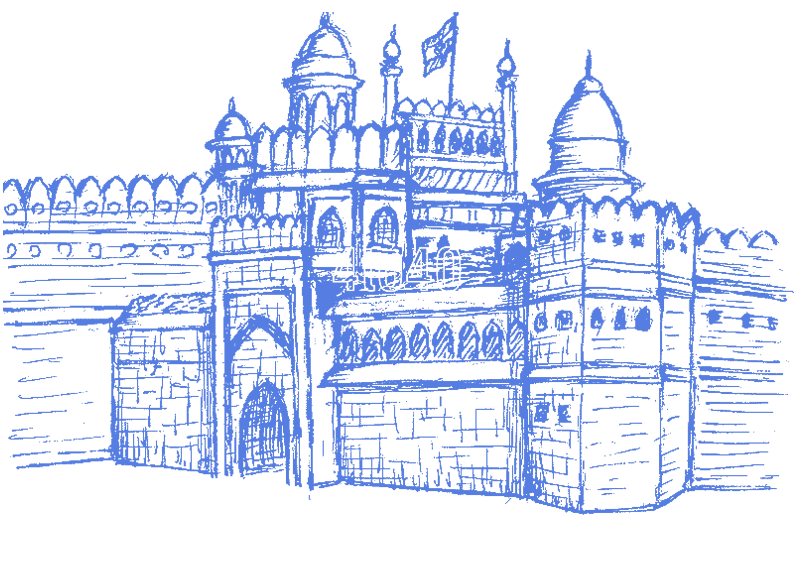

The Red
Fort was
the residence of the Mughal emperor
of
India for nearly 200 years, until 1857. It is located in
the centre of Delhi and
houses a number of
museums. The Red
Fort’s innovative architectural
style, including its garden design,
influenced later
buildings and garden in
Delhi, Rajasthan, Punjab, Kashmir, Braj, Rohilkhand
and
elsewhere. With the Salimgarh Fort, it was
designated a UNESCO
World Heritage Site in
2007 as part of the Red Fort Complex.